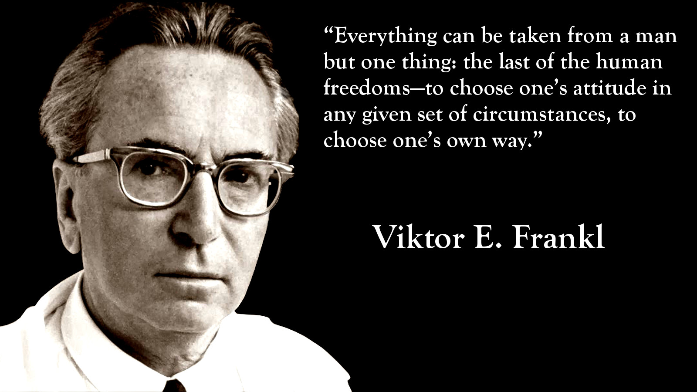
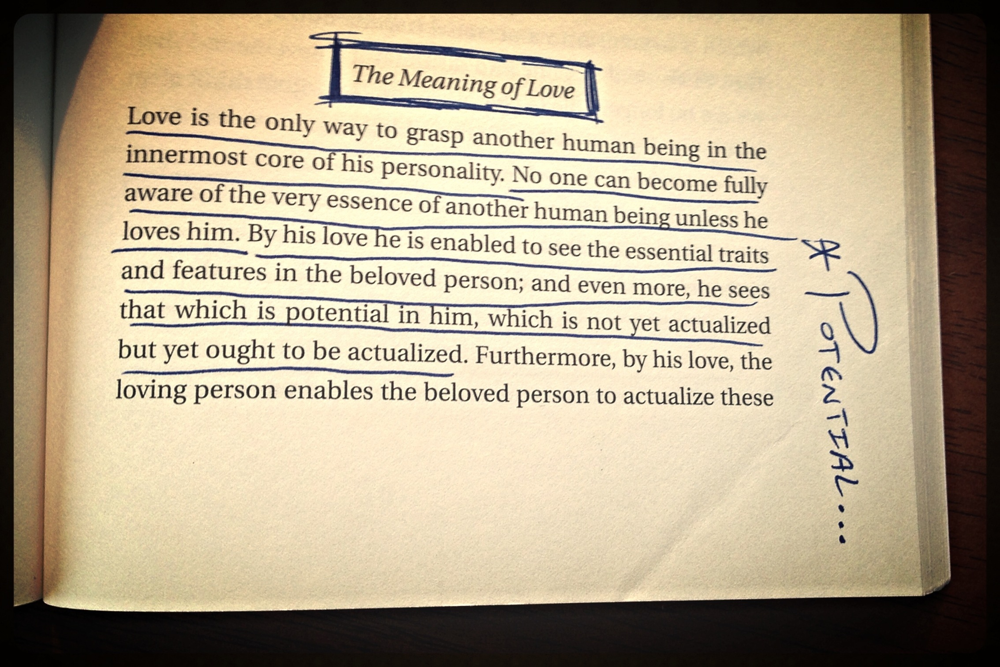

How to Plant Succulents in Containers: a Beginner's Guide
Spring is just around the corner and I have been getting my gardening supplies ready. If you’re thinking of making your very first succulent container garden, now is the time to do so. I will show you how to plant your very first succulent container garden and plenty of other potting tips right here.
When planting a succulent container garden, it doesn’t take that much planning but you do need to consider the following things before you go ahead and start planting:
The Size of the Pot
Does the size of the pot matter? Yes. Succulents have shallow roots and do not require very deep pots with a ton of soil to grow. In fact, succulents prefer a somewhat shallow pot, or just enough soil to encourage the roots and the plant to spread out. Whether you choose the plant first and then the pot second, or have the pot first then choose the plants to go in the pot later, you want the size of the pot to correspond with the size of the plant(s) you are using. You don’t want the pot to be too large for the plant, but you want to give the plant some room to grow too.
A good rule to follow is to have the pot about 1 or 2 inches large in diameter than the current nursery pot the plant is in.
{kind=link}
The Type of Succulents You Are Using
The types of plants you want to use, including the color schemes, color combinations, shapes and sizes largely depend on your own personal taste. There really isn’t a right or wrong way of combining succulent plants. The only thing I am careful about when combining plants together in one container is their growing needs. As much as possible, you want to put plants with similar growing needs in one container. If you’re unfamiliar with a plant’s growing needs and the label does not provide you with basic instructions, just do a quick search to find out what the plant’s basic growing needs are.
{kind=link}
Written by Happy Planer.
Share this post on social media:


Book Review: Man's Search for Meaning (Victor Frankl)
Humans in suffering tend to feel hopeless with a deep sense of failure. MAN's SEARCH FOR MEANING (Frankl, 1984) is a helpful book during such times: it is highly probable that one would find a solution to their depressed feelings, if the book is read actively. Written by Austrian neurologist-psychiatrist and a Holocaust survivor Victor Frankl, this book is simple yet intense and reflective. Frankl is the founder of Logotherapy, a form of existential psychology. Awarded with several accolades, his books and talks are the most inspiring on finding meaning in life and in suffering.
{kind=link}
The book stands out extraordinarily as Frankl, by narrating his life instances in the Auschwitz concentration camp, presents the remarkable idea of how we can choose to see a purpose or meaning in any situation, including the worst conditions. He descriptively illustrates his personal experiences and observations of minute human changes which infuses hope into the reader. With rich primary and secondary data, Frankl puts forward his ideas in three sections. The qualitative methodology utilized has smoothly fused his thoughts through these three parts, clarifying Nietzsche words, “He who has a why to live can bear almost any how.” This book is a collaboration of Frankl's personal experiences and stories, references to other existential forerunners, quotes from humanistic and psychoanalytic schools, and excellent figurative examples. Many pathological terms have been used in the book, which are well explained by the author.
{kind=link}
An active reader also learns about “Logotherapy” that the author attempts to explain in the second section. The nature, meaning and goals are well detailed. Even the finest differences between psychoanalysis and Logotherapy are clearly specified. Frankl liberally introduces every concept of Logotherapy (such as the existential vacuum, responsibility of survival, existential frustration). He also describes the therapy process and techniques with some great figurative examples and case studies. A novice therapist may find these useful. However, he fails to explain how one can integrate these techniques with the conventional psychotherapeutic process. Nevertheless, his strong request to re-humanize psychotherapy inspires us into a new direction of thought and practice.
{kind=link}
Written by A Bookworm.
Share this post on social media:
10 Easy Raw Vegan Recipes Even a Novice Cook Can Make
Deciding to eat healthier can be a complete lifestyle change. For some, it means cutting out desserts. For others, it means skipping seconds. And, of course, for most, it means incorporating more fruits and vegetables into a daily routine. But what if you're thinking of eating healthier by trying the raw vegan diet?
{kind=link}
What Is a Raw Vegan Diet?
A raw vegan diet is a plant-based diet with no foods heated above 104 degrees Fahrenheit. Foods are eaten raw, dehydrated, juiced, blended, soaked, sprouted, or fermented, and the diet is rich in nuts, seeds, fruits, vegetables, sprouted grains, and legumes.
{kind=link}
We've all grown accustomed to various diet trends over the years, from vegetarianism and going gluten-free to plain old vegan. In fact, stories in The New York Times about raw vegan diets have been popping up since the early 2000s, so it isn't necessarily anything new. U.S. News estimates that an early form has even been around since the 19th century. But just because it's been a part of other people's lives for a certain amount of time doesn't mean you can't learn something new. If you're interested in what the raw vegan diet is and how to cook within its boundaries, read on for more.
{kind=link}
Written by Cook & Share.
Share this post on social media: